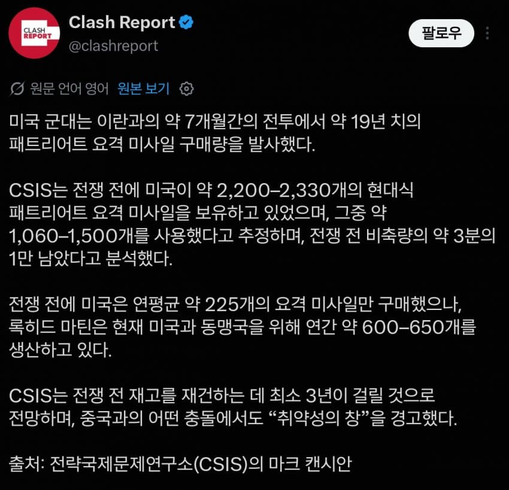

재생산하려면 수공예품인 미사일 특성상 3년이 걸린다고

재생산하려면 수공예품인 미사일 특성상 3년이 걸린다고
진짜 저새끼가 간첩아님?
저번에ㅜ어떤 개붕이가 미국이 공장돌리면 몇개월안에 다 채운다면서 큰소리 떵떵 치던데 ㅋㅋㅋ
지금이 2차대전중이었다면 말이야~~
ㅋㅋ 심지어 2차대전때 미국이 보여준 압도적인 무기 생산도 당시 전세계 최강 산업국가라는 뒷배경이 있었기때문임.
꼭 마가 놈들이 트황께서 갈 한방으로 전시체제 들어가면 초전박살 타령하는데, 과연 전시체제 들어가면 미중 둘 중 어느쪽이 더 압도적인 역량이 나올지 모르나봄.
맞지. 제조업 밸류 체인 존나 우습게 봄.
기초적인 제조 인프라가 다 박살난 나라가 뭘 만들겠다고.
베도 못만드는 놈들이 뭐래 ㅋㅋㅋㅋㅋㅋ
마가야로 새끼들이 아직도 안 뒤졌다고...
천궁 사시랑께
미사일 수공예였다니 ㄷㄷ
자이로센서 부터 모터, 엔진, 화약, 센서 모든게 사람손으로 조립해야함
머신스피릿이라 섬세하게 다뤄야함
향 좀 피우고 기도 좀 하면 더 빨리 만들어지지 않을까?
이러니 드론 만들지. 그냥 비싼 돈을 허공에다 뿌리는 거네. 최소 한화 55억짜리 미사일인데 ㅋㅋㅋ
전쟁하기 딱 좋은 시기넼
난 암만 생각해도 방산업체 쪽에서 트럼프한테 돈 찔러준거 같음
방산업이 제일 좋아하는건 냉전이지 진짜 전쟁나버리면 가장 돈 되는 분야인 신규무기개발 뭉텅이로 다 잘려서 오히려 별로임. 아예 총력전 수준까지 가면 또 모를까
진짜 역설적이네 수공예품 미사일
7개월동안 19년치 쓴거면 사실상 7개월치 아니엇을까?
평시 기준 19년치인가
지금 생산속도기준이겠지
군수업계가 생각보다 수공업으로 돌아가는 부분이 많은거같더라.
완전 무인화/고도화 하기까진 규모의경제가 적용되는 숫자는 아니여서 그런가
ㅇㅇ 대량 생산해봤자 팔데가 있어야지
일단 라인을 까는, 일종의 반자동화 공정이 진짜 비쌈.
보통 연간 만대를 못 만들면 그냥 세워두고 사람이 하는게 더 싼 걸로 앎.
역시 꾸준히 날려야지
방산업체 사장님들은 신났어유
개드립 전문가들아 폭탄은 왜 수공업이야 ??? 왜 자동차처럼 못찍어내 ?? 설명좀
요격 미사일은 주문 수량이 많지않음
대량 생산 제품이 아니라서 아닐까? 전시였다면 라인 깔고 대량 생산 했겠지만ㅋ
대량생산 대량소비가 안되기때문
자동차도 몇대 안팔리는건 손으로 만들잖아
2차 세계대전 마냥 세계전쟁 터지면 대량생산 해서 찍어낼텐데 지금은 그런 시기가 아니니까
럼프가 이란 때린 이유가 아직도 명확하게 납득이 안감…
이스라엘의 로비
유대인의 꼬봉
논리적인 이유를 찾으려니까 납득이 안되는거
"씹타냐후가 좆람푸 뒷구멍에 돈을 꽂아주며 엡스타인 이야기를 넌저시 함" 같이
좆람푸 수준에 맞춰서 이유를 찾아야...
왠지 전시되면 한국은 탄약 존나 잘만들거 같다 ㄷㄷ
미사일 같은 최고급 무기는 조립도 박사급이 하려나.
???: 진핑이형, 지금이야!!
미국 정상화는 대 럼 프
한국에 패트리어트 공장 설립을 허가 하라
근데 미국 전쟁나면 2차세계대전때처럼 싸울수 있음? 이제 군함도 못만들더만
19년치 미사일박고 승리선언 못한거보면 전쟁이란거 존나 어렵나봄
기존 패트리어트 미사일도 비싸다고 후기형은 성능 희생해서 저가형으로 만들고
저번에 주한미군이 싸드 뺀 이유가 트럼프 개 좆지랄 때문에 미사일 부족해서 뺀거고 이란과 전쟁으로 물량 딸리니깐 유럽이 구매한 물건도 나중에 준다고 면상에 철판깔고 우크라이나가 차라리 우리가 생산해봄 하니깐 그러면 더 저렴하고 빠르게 물건 납품하는 경쟁자 생긴다고 레이시온은 반대하고 ㅋㅋㅋㅋ
노머고의 큰 그림 정말 대단하더라
양안전쟁 터지면 진짜 미사일 없어서 구경만 할수도 있겠네
군수업은 탄약이나 포탄같은 소모품 아니면 다 수작업임.. 자동화 라인 깔기엔 대량주문이 안나옴
ㄹㅇ 토크렌치로 대각선 순서대로 조이고 축성드리고 환경시험 돌리고 기도드리고 그래야함
딴걸로 바꿀듯
패트리어트가 비싼건 알겠는데 아무리 그래도 뭔놈의 미사일을 1년에 600개밖에 못만드냐 ㄷㄷㄷ
제조업에서 LRP <> FRP 스왑이 생각보다 쉽지않음
트~럼~프 ( 관세 올리는 톤으로 )